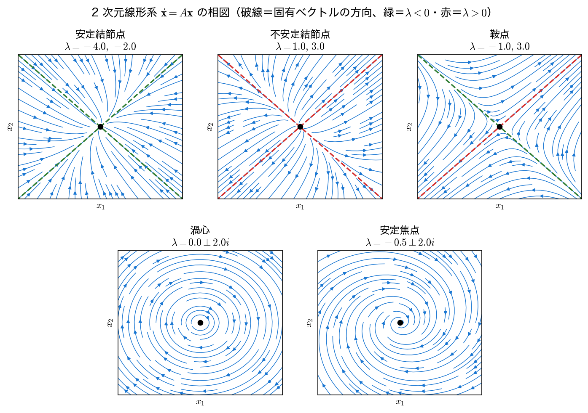
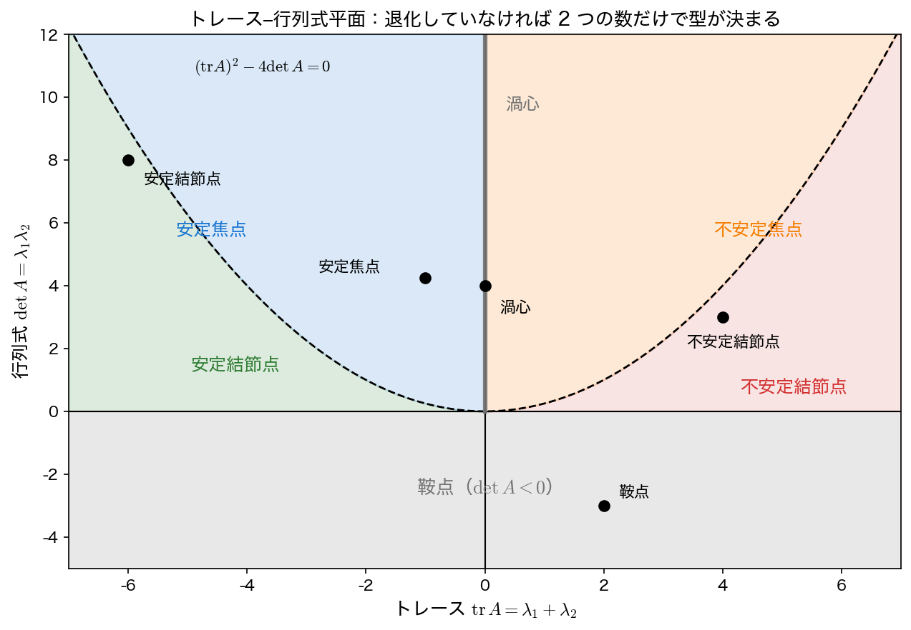

線形系の固有値と平衡点の分類
第8回では伝達関数の 極 の位置でシステムの安定性を判定した。本ページでは同じ問いを状態空間の側から立て直し、状態行列 \(A\) の 固有値 が平衡点のまわりの安定・不安定を決めることを見る（\(t\to\infty\) での行き先は固有値だけで決まる。ただし有限時間の過渡的な振る舞いの大きさは、固有ベクトルの傾き具合や重根の有無にも依存する ── これは演習1 で確かめる）。最後に、極と固有値が同じものであることを数値で確かめる。
状態空間と平衡点
第1回で見たとおり、動的システムは状態ベクトル \(\mathbf x(t)\in\mathbb R^n\) を使って
と書ける。入力を切った（\(u=0\)）ときの振る舞いを 自由応答 といい、これが系そのものの性質を表す。以下では
を扱う。\(\dot{\mathbf x}=\mathbf 0\) となる点を 平衡点（equilibrium point） と呼ぶ。線形系では \(A\mathbf x^{*}=\mathbf 0\) なので、\(\det A\neq0\) なら平衡点は 原点だけ である。問題は「原点の近くから出発した状態が、そこへ戻るのか、離れていくのか」である。
- 漸近安定（asymptotically stable）：どの初期値からも \(\mathbf x(t)\to\mathbf 0\)
- 安定（リアプノフ安定）：初期値を十分小さくとれば、その後もずっと小さいまま（ただし \(\mathbf 0\) に収束するとは限らない）
- 不安定（unstable）：いくら初期値を小さくしても離れていく初期値がある
行列指数関数による解と固有値
スカラーの \(\dot x=ax\) の解が \(x(t)=e^{at}x_0\) であったのと同じ形で、行列の場合も
と書ける。この級数は任意の \(A\) で収束するが、そのままでは中身が見えない。\(A\) が対角化可能で \(A=V\Lambda V^{-1}\)（\(\Lambda=\mathrm{diag}(\lambda_1,\dots,\lambda_n)\)、\(V\) の列が固有ベクトル \(\mathbf v_i\)）と書けるときは、\(A^k=V\Lambda^kV^{-1}\) より
となる。初期値を固有ベクトルで展開して \(\mathbf x_0=\sum_i c_i\mathbf v_i\) とすれば、
である。固有ベクトルの方向ごとに、単純な指数関数で伸び縮みする ── これが解の正体である。したがって
が成り立つ。固有値が複素数 \(\lambda=\sigma\pm j\omega\) のときは、\(e^{\sigma t}(\cos\omega t\pm j\sin\omega t)\) となり、実部 \(\sigma\) が減衰・増大を、虚部 \(\omega\) が振動を 担う。第8回の s 平面での議論とまったく同じ図式である。
減衰振動子 \(\ddot y+2\zeta\omega_n\dot y+\omega_n^2y=u\) を状態空間で書くと \(\mathbf x=(y,\dot y)^{\top}\)、
である。\(\zeta=0.3,\ \omega_n=2\) として、scipy.linalg.expm による数値計算と固有値展開の解析式が一致することを確かめる。
import numpy as np
import scipy.linalg as sla
zeta, wn = 0.3, 2.0
A = np.array([[0.0, 1.0], [-wn**2, -2*zeta*wn]]) # 減衰振動子
w, V = np.linalg.eig(A)
x0 = np.array([1.0, 0.0]) # 初期変位 1、初速 0
print(f"A の固有値: {w[0]:.4f}, {w[1]:.4f}")
for t in (0.5, 1.0, 2.0):
num = sla.expm(A*t) @ x0 # 行列指数関数
ana = (V @ np.diag(np.exp(w*t)) @ np.linalg.inv(V) @ x0).real # 固有値展開
print(f"t={t:.1f}: expm={num[0]:+.6f} 固有値展開={ana[0]:+.6f} "
f"誤差={np.abs(num - ana).max():.2e}")
A の固有値: -0.6000+1.9079j, -0.6000-1.9079j
t=0.5: expm=+0.618583 固有値展開=+0.618583 誤差=1.11e-16
t=1.0: expm=-0.018631 固有値展開=-0.018631 誤差=6.66e-16
t=2.0: expm=-0.294431 固有値展開=-0.294431 誤差=1.17e-15
両者は機械精度で一致する。固有値は \(\lambda=-0.6\pm1.9079j\) で、実部 \(-0.6=-\zeta\omega_n\) が減衰の速さ、虚部 \(1.9079=\omega_n\sqrt{1-\zeta^2}\) が減衰振動の角周波数にあたる。第7回で 2 次系の過渡応答として求めた量が、そのまま固有値の実部・虚部として現れている。
対角化できないとき
固有値に重複があり固有ベクトルが足りない場合（例：\(A=\begin{pmatrix}\lambda&1\\0&\lambda\end{pmatrix}\)）は対角化できず、解に \(t\,e^{\lambda t}\) のような項（ジョルダン標準形に由来する）が現れる。ただし \(t^k e^{\lambda t}\) も \(\mathrm{Re}\,\lambda<0\) なら \(0\) に収束する ので、「実部がすべて負なら漸近安定」という結論は変わらない。
注意が要るのは \(\mathrm{Re}\,\lambda=0\) の固有値が重根のときである。「重根だから発散する」のではなく、その固有値に \(2\times2\) 以上のジョルダンブロックがあるかどうか で分かれる。\(A=\begin{pmatrix}0&0\\0&0\end{pmatrix}\) は \(\lambda=0\) の重根だが対角化可能で \(e^{At}=I\)、\(\lVert e^{At}\rVert_2\) は \(t=100\) でも \(1.0000\) のまま（リアプノフ安定）。一方 \(A=\begin{pmatrix}0&1\\0&0\end{pmatrix}\) は同じ固有値でも対角化できず \(e^{At}=\begin{pmatrix}1&t\\0&1\end{pmatrix}\) となり、\(\lVert e^{At}\rVert_2\) は \(t=10\) で \(10.10\)、\(t=100\) で \(100.01\) と \(t\) に比例して増大する（不安定）。scipy.linalg.expm は対角化を使わないアルゴリズム（スケーリングとパデ近似）なので、こうした場合でも正しく計算できる。
2 次元系の 5 つの型
\(n=2\) のときは相平面 \((x_1,x_2)\) に軌道を描けるので、固有値と幾何が直接見比べられる。固有値の組み合わせによって、平衡点は次の型に分かれる。
| 固有値 | 型 | 振る舞い |
|---|---|---|
| \(\lambda_2<\lambda_1<0\)（実） | 安定結節点（node） | すべての軌道が原点へ。遅い固有ベクトル方向に沿って入る |
| \(0<\lambda_1<\lambda_2\)（実） | 不安定結節点 | すべての軌道が原点から出る |
| \(\lambda_1<0<\lambda_2\)（実） | 鞍点（saddle） | 一方向からは入り、別方向へ出ていく（常に不安定） |
| \(\lambda=\pm j\omega\)（純虚） | 渦心（center） | 原点のまわりを回り続ける（周期解） |
| \(\lambda=\sigma\pm j\omega,\ \sigma\neq0\) | 焦点（spiral / focus） | 回りながら \(\sigma<0\) なら収束、\(\sigma>0\) なら発散 |

5 つの行列について、トレース・行列式・判別式・固有値を計算する。
systems = [
("安定結節点", np.array([[-3.0, 1.0], [1.0, -3.0]])),
("不安定結節点", np.array([[2.0, 1.0], [1.0, 2.0]])),
("鞍点", np.array([[1.0, 2.0], [2.0, 1.0]])),
("渦心", np.array([[0.0, 2.0], [-2.0, 0.0]])),
("安定焦点", np.array([[-0.5, 2.0], [-2.0, -0.5]])),
]
for name, M in systems:
ev = np.real_if_close(np.linalg.eigvals(M)) # 実の固有値は実数で表示
tr, det = np.trace(M), np.linalg.det(M)
print(f"tr={tr:+.1f} det={det:+.2f} tr^2-4det={tr**2 - 4*det:+.2f} "
f"lambda={ev[0]:+.2f}, {ev[1]:+.2f} -> {name}")
tr=-6.0 det=+8.00 tr^2-4det=+4.00 lambda=-2.00, -4.00 -> 安定結節点
tr=+4.0 det=+3.00 tr^2-4det=+4.00 lambda=+3.00, +1.00 -> 不安定結節点
tr=+2.0 det=-3.00 tr^2-4det=+16.00 lambda=+3.00, -1.00 -> 鞍点
tr=+0.0 det=+4.00 tr^2-4det=-16.00 lambda=+0.00+2.00j, +0.00-2.00j -> 渦心
tr=-1.0 det=+4.25 tr^2-4det=-16.00 lambda=-0.50+2.00j, -0.50-2.00j -> 安定焦点
固有値を見れば型は分かるが、実は 固有値を計算しなくても トレースと行列式だけで分類できる。上の表をよく見ると、\(\det\) の符号・\(\mathrm{tr}\) の符号・\(\mathrm{tr}^2-4\det\) の符号の 3 つで型が決まっていることが読み取れる（ちょうど \(0\) になる退化した場合については次節で触れる）。
固有値の表示を揃える
NumPy の版によっては、np.linalg.eigvals が実の固有値も -2.00+0.00j のような虚部 \(0\) の複素数で返す。上のコードの np.real_if_close は、虚部がすべて丸め誤差程度なら実数の配列に直す関数で、どの版でも同じ表示になるように使った。渦心・安定焦点の固有値は複素数のまま残る。
トレース–行列式平面
\(2\times2\) 行列の特性方程式は
である。すなわち \(\lambda_1+\lambda_2=\mathrm{tr}\,A\)、\(\lambda_1\lambda_2=\det A\)。この 2 つだけで分類が完結する。
- \(\det A<0\) → 固有値は実数で異符号 → 鞍点（必ず不安定）
- \(\det A>0\) かつ \((\mathrm{tr}\,A)^2-4\det A>0\) → 実数で同符号 → 結節点（\(\mathrm{tr}\,A<0\) なら安定、\(>0\) なら不安定）
- \((\mathrm{tr}\,A)^2-4\det A<0\) → 複素共役 → 焦点（\(\mathrm{tr}\,A<0\) なら安定、\(>0\) なら不安定）
- \(\mathrm{tr}\,A=0\) かつ \(\det A>0\) → 純虚数 → 渦心
まとめると、漸近安定 \(\iff\) \(\mathrm{tr}\,A<0\) かつ \(\det A>0\)（2 次元の場合）である。これは第8回のラウス・フルビッツ判別を \(n=2\) に適用したときの条件 \(a_1>0,\ a_2>0\) と同じものである。
上の 4 つが尽くしているのは、\(\det A\neq0\) かつ \((\mathrm{tr}\,A)^2-4\det A\neq0\) という 退化していない 場合である。\(\det A=0\) なら固有値の一方が \(0\) で、平衡点は原点だけでなく直線状に並ぶ（\(A\mathbf x=\mathbf 0\) の解空間が 1 次元以上）。\((\mathrm{tr}\,A)^2-4\det A=0\) の重根の場合は、固有ベクトルが 2 本そろうか 1 本しかないかで 星型結節点 と 退化結節点 に分かれ、\(\mathrm{tr}\,A\) と \(\det A\) の 2 数だけでは区別がつかない。いずれも次の図では境界線（放物線と横軸）そのものにあたる。

境界はきわどい
渦心は \(\mathrm{tr}\,A=0\) という 面積ゼロの線の上 にしか存在しない。\(A\) の成分をほんのわずか動かせば、たちまち安定焦点か不安定焦点に転げ落ちる。同じことは重根の境界（放物線上）にも言える。実際のシステムはパラメータに誤差やモデル化されていない効果を含むので、境界上の分類は「そこにいる」と信用してはいけない。この点は、後のページで非線形系の線形化を扱うときに決定的な意味をもつ。
伝達関数の極は状態行列の固有値
状態空間表現から伝達関数を作るには、\(\dot{\mathbf x}=A\mathbf x+Bu\)、\(y=C\mathbf x+Du\) を（初期値 \(\mathbf 0\) で）ラプラス変換して \(\mathbf X(s)\) を消去すればよい。
逆行列の公式 \((sI-A)^{-1}=\dfrac{\mathrm{adj}(sI-A)}{\det(sI-A)}\) より、\(G(s)\) の分母は \(\det(sI-A)\) ＝ \(A\) の特性多項式 である。つまり
が成り立つ（分子と共通因子が相殺しない限り）。先ほどの減衰振動子で確かめる。入力を加速度に加える形（\(B=(0,1)^{\top}\)）、出力を変位（\(C=(1,0)\)）とする。
import scipy.signal as ss
B = np.array([[0.0], [1.0]])
C = np.array([[1.0, 0.0]])
D = np.array([[0.0]])
num, den = ss.ss2tf(A, B, C, D)
poles = np.sort_complex(np.roots(den)) # 伝達関数の極
eigs = np.sort_complex(np.linalg.eigvals(A)) # A の固有値
print("分母多項式:", np.round(den, 6))
print("伝達関数の極:", poles)
print("A の固有値 :", eigs)
print(f"最大差 = {np.abs(poles - eigs).max():.2e}")
分母多項式: [1. 1.2 4. ]
伝達関数の極: [-0.6-1.9078784j -0.6+1.9078784j]
A の固有値 : [-0.6-1.9078784j -0.6+1.9078784j]
最大差 = 0.00e+00
分母は \(s^2+1.2s+4=s^2+2\zeta\omega_ns+\omega_n^2\) で、極と固有値は完全に一致する（差がちょうど \(0\)）。第8回の「極を左半平面に入れる」と、本ページの「固有値の実部を負にする」は、まったく同じ要求である。
状態空間表現は一意ではない
状態の取り方を変えれば \(A\) は変わる。\(\tilde{\mathbf x}=T\mathbf x\)（\(T\) は正則）と置くと \(\tilde A=TAT^{-1}\)、\(\tilde B=TB\)、\(\tilde C=CT^{-1}\) となるが、相似変換は固有値を変えないので \(\tilde A\) の固有値は \(A\) と同じであり、伝達関数 \(G(s)\) も変わらない。同じシステムに無数の状態空間表現があり、そのすべてが同じ極をもつ ということである（演習2 で数値的に確かめる）。
極零相殺があるとき
\(G(s)\) の分子と分母に共通因子があると、その極は約分されて \(G(s)\) から見えなくなる。しかし \(A\) の固有値としては残っている。この「見えない固有値」が右半平面にあるシステムは、入出力の応答は正常に見えるのに内部状態が発散する ── 制御工学でいう 可制御性・可観測性 の問題であり、状態空間で見て初めて分かる危険である。伝達関数だけを見ていては気づけない、状態空間表現の利点の一つといえる。
まとめ
- 線形系 \(\dot{\mathbf x}=A\mathbf x\) の解は \(\mathbf x(t)=e^{At}\mathbf x_0\)。対角化できれば \(\mathbf x(t)=\sum_i c_ie^{\lambda_it}\mathbf v_i\) と分解され、固有ベクトルの方向ごとに指数関数で伸縮する。
- 漸近安定 \(\iff\) すべての固有値の実部が負。実部が減衰・増大の速さ、虚部が振動の角周波数を与える（数値でも
expmと固有値展開が \(10^{-16}\) で一致）。 - 2 次元系の平衡点は 安定結節点・不安定結節点・鞍点・渦心・焦点 の 5 つに分類され、退化していなければ（\(\det A\neq0\)、重根でない）\(\mathrm{tr}\,A\) と \(\det A\) の 2 つの数だけで型が決まる。漸近安定の条件は \(\mathrm{tr}\,A<0\) かつ \(\det A>0\)。
- 渦心や重根は 面積ゼロの境界 の上にしかなく、パラメータのわずかな変化で型が変わる。
- \(G(s)=C(sI-A)^{-1}B+D\) の分母は \(\det(sI-A)\) なので、極零相殺がなければ伝達関数の極は \(A\) の固有値そのもの（数値でも差はちょうど \(0\)）。第8回の極による判定と本ページの固有値による判定は同じ主張である。
次は、この固有値による判定を 非線形系 へ持ち込む 非線形系の線形化と平衡点解析 に進む。